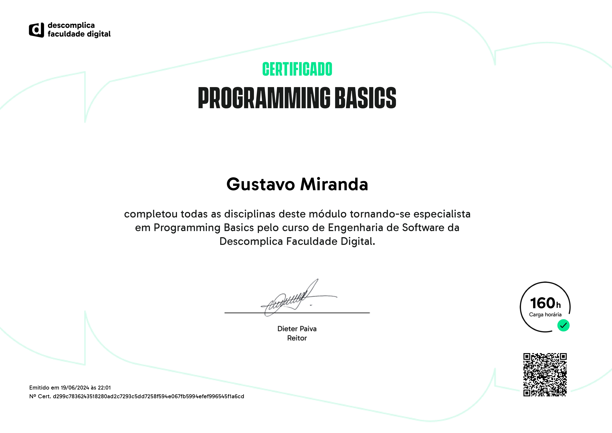
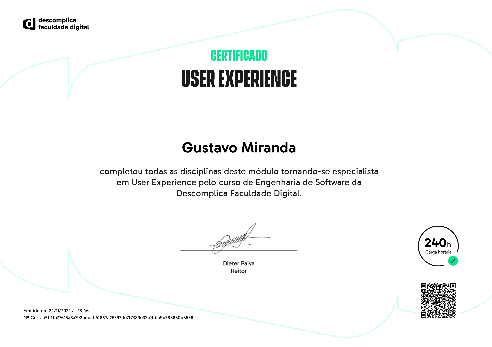
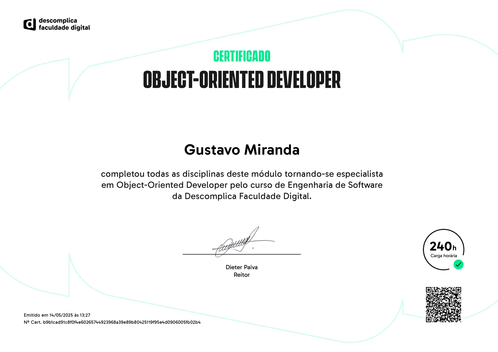

🚀 Formação e Habilidades
Tenho boa base em lógica de programação, design thinking e modelagem de dados. Atualmente, aprofundo meus estudos em Back-End com Node.js, Express e MongoDB, buscando evolução como desenvolvedor Full Stack.
Atuo no desenvolvimento Full Stack, com introdução e prática em Node.js, Express e MongoDB, integrando essas tecnologias ao Front-End com HTML, CSS e JavaScript para criar aplicações completas e funcionais.

Programação Básica
Certificado emitido pela plataforma Descomplica.

Experiência do usuário
Certificado emitido pela plataforma Descomplica.

Desenvolvedor Orientado a Objetos
Certificado emitido pela plataforma Descomplica.
Desenvolvedor de banco de dados
Certificado emitido pela plataforma Descomplica.